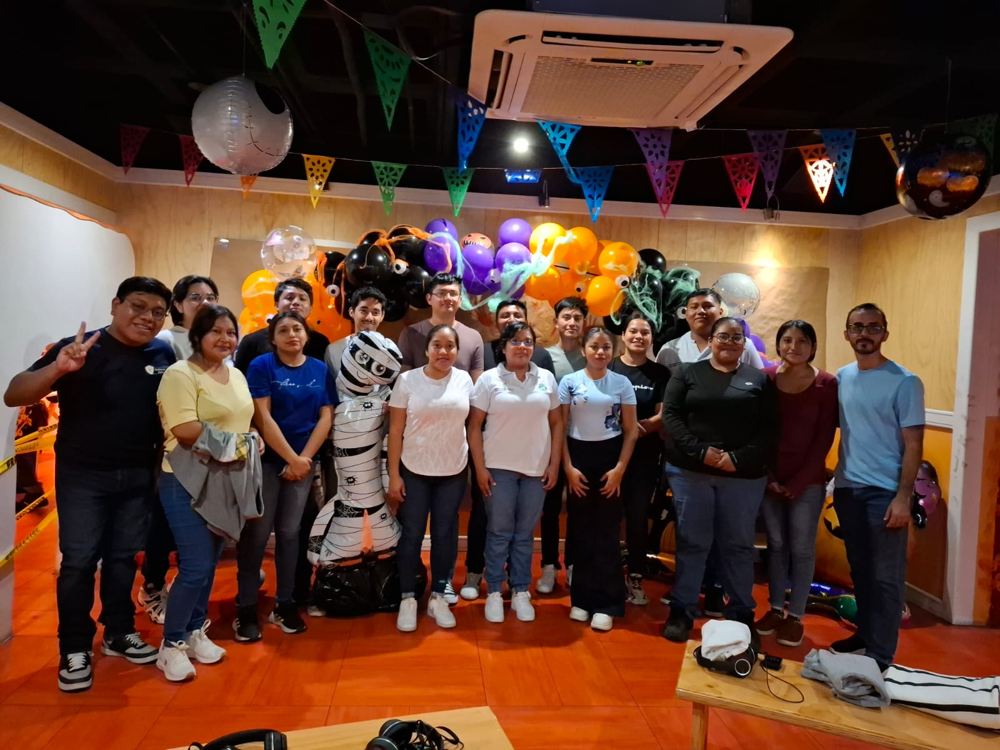

Mis Logros
1.🎓 Formación Académica y Técnica
- Estudiante de la carrera de Informática, con interés en el desarrollo de software, redes y sistemas operativos.
- Participación activa en proyectos escolares relacionados con auditoría informática, bases de datos y administración de servidores.
- Conocimientos sólidos en programación, sistemas operativos Linux y Windows, redes y seguridad informática.
2.💻 Proyectos Relevantes
- Proyecto “Café Aroma”: Diseño y desarrollo de una base de datos para gestionar inventario, pedidos y ventas de una cafetería.
- Instalación y configuración de un servidor DNS en Ubuntu Server, administrando usuarios y permisos.
- Auditoría de hardware con herramientas como WinAudit y System Profiler, aplicada a un laboratorio escolar.
- Desarrollo de sitios web con HTML, CSS y PHP, implementando menús y navegación moderna.
3.🏅 Logros Académicos y Personales
- Reconocido por la responsabilidad y trabajo en equipo en proyectos grupales.
- Elaboración de informes técnicos y documentación profesional en formato IEEE.
- Mejora continua en el manejo de entornos cliente-servidor y programación de aplicaciones distribuidas.
- Interés constante por aprender nuevas tecnologías y herramientas del ámbito TI.
4.⚙️ Habilidades Destacadas
- Lenguajes de programación: Python, Java, PHP, CSS.
- Administración básica de redes, servidores y sistemas operativos Linux.
- Manejo de software de auditoría, virtualización y bases de datos.
- Trabajo colaborativo y capacidad para resolver problemas técnicos.